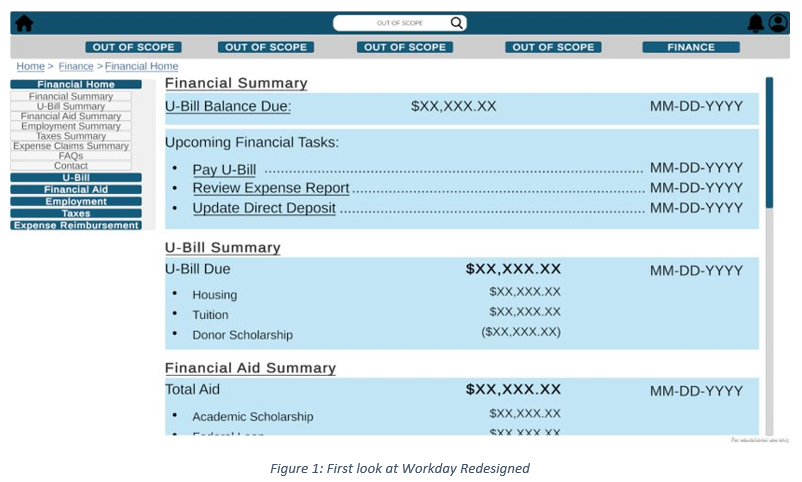

| Contents |
Workday Redesign OverviewThis project was pursued as a group project for IE 5720, Design and Evaluation of Human-Computer Interaction, taught by Prof. Michael Dorneich, to learn how to design and evaluate usable interfaces. We chose Workday because a lot of people complained about the interface when it first came out, and we wanted to see what an alternative could look like and what about it was bemoaned. The project entailed:
Project collaborators were Thomas Lenz, Stephen Fieffer, Ryan McCurnin, and Evelyn Khew. ResultsProject Report |